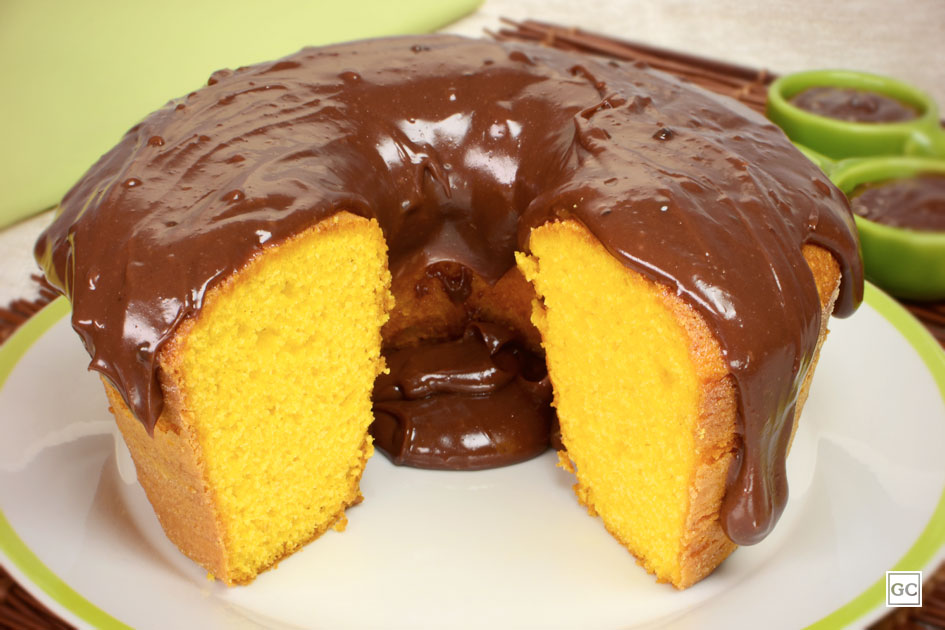

Bolo de cenoura
| Dificuldade | Porções | Tempo de preparo |
|---|---|---|
| Média | 10 pedaços | 45 min |

Ingredientes:
Massa
- 3 cenouras médias picadas (cerca de 250g a 300g)
- 4 ovos
- 1 xícara de óleo (200 ml)
- 2 xícaras de açúcar
- 2 xícaras de farinha de trigo
- 1 colher de sopa de fermento químico em pó
- 1 pitada de sal (opcional, para realçar o sabor)
Cobertura
- ½ xícara de chocolate em pó (ou achocolatado)
- ⅓ a 1 xícara de açúcar (conforme sua preferência de doçura)
- 1 colher de sopa de manteiga ou margarina
- ⅓ a ½ xícara de leite (ou água)
Modo de preparo
Prepararando a massa
- Preaqueça o forno a 180 °C.
- Junte e enfarinhe uma forma (redonda com furo no meio de cerca de 24 cm ou retangular de 30x20 cm).
- No liquidificador, coloque as cenouras picadas, os ovos, o óleo e o açúcar. Bata por cerca de 2 a 3 minutos até obter uma mistura totalmente lisa e homogênea.
- Em uma tigela grande, peneire a farinha de trigo com a pitada de sal.
- Despeje o líquido do liquidificador sobre a farinha e mexa delicadamente com um batedor (fuê) ou colher até incorporar.
- Adicione o fermento em pó e misture de leve apenas para integrar.
- Despeje a massa na forma preparada.
- 1. Leve ao forno preaquecido a 180 °C por aproximadamente 40 a 45 minutos.
- Faça o teste do palito: se sair limpo, o bolo está pronto. Retire do forno e deixe esfriar um pouco antes de desenformar.
Fazendo a Cobertura
- Em uma panela, junte o chocolate em pó, o açúcar, a manteiga e o leite.
- Misture bem e leve ao fogo baixo, mexendo sem parar até ferver e engrossar levemente (ponto de calda).
- Despeje a calda ainda quente por cima do bolo. Se preferir a casquinha crocante, espere a calda esfriar sem mexer muito após aplicar.